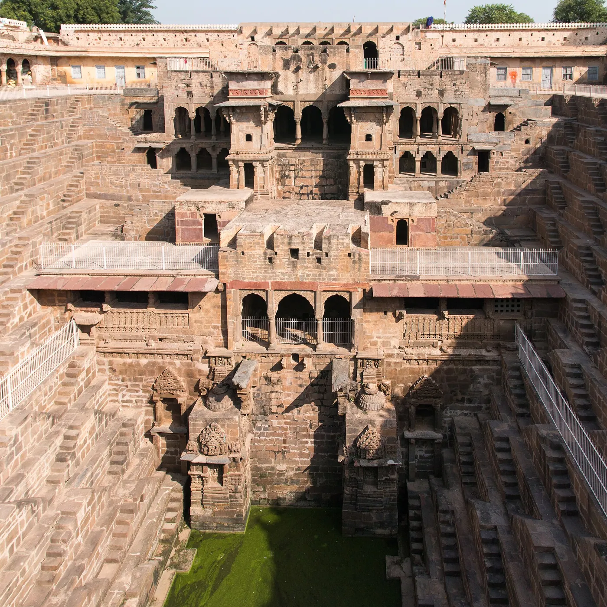
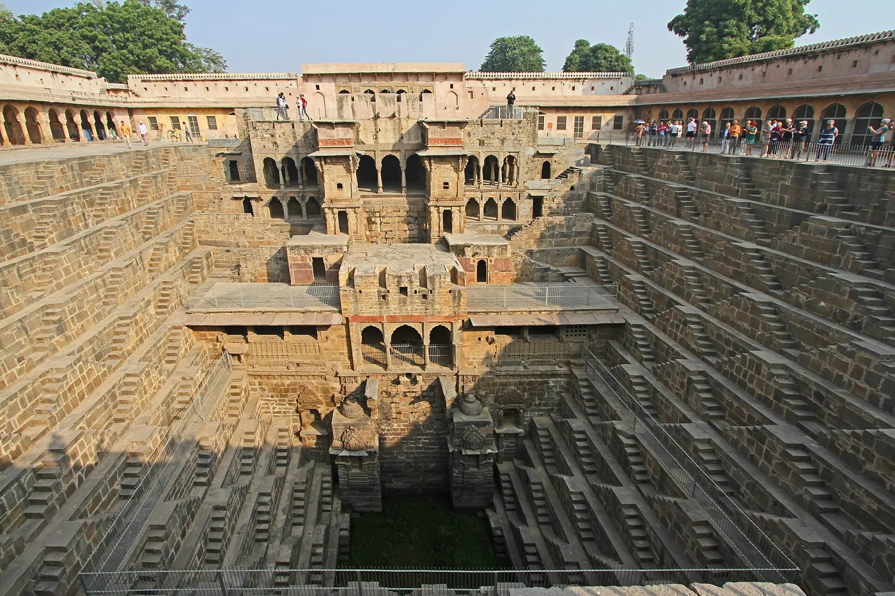
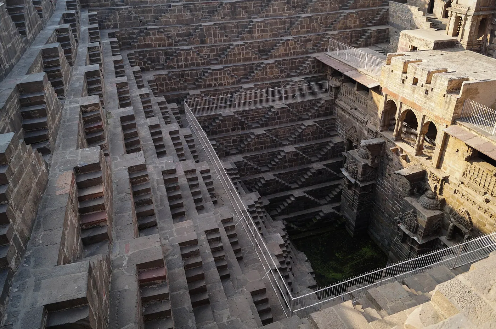
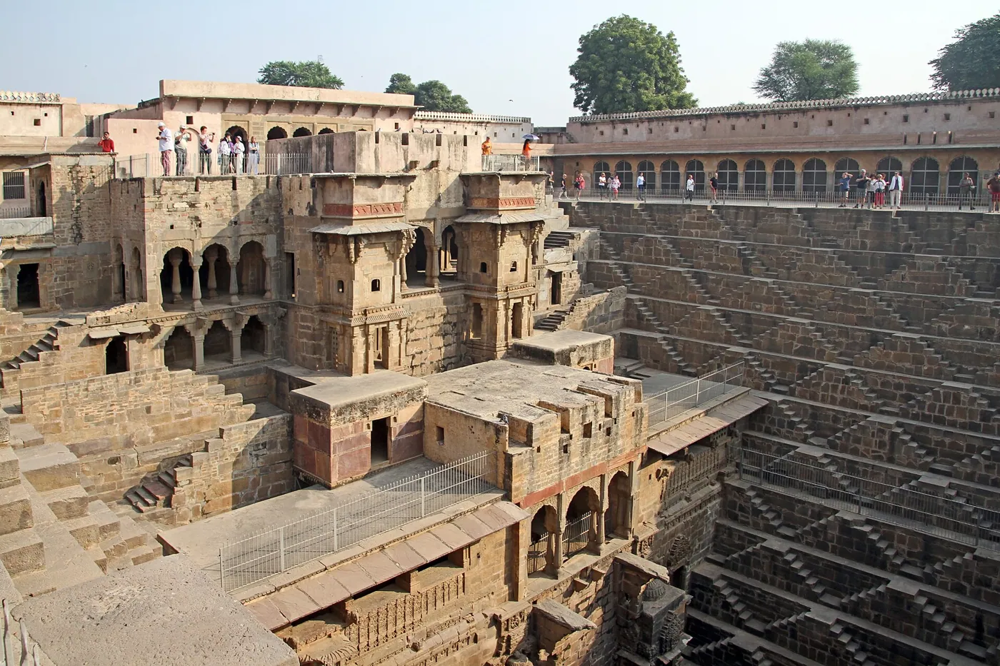
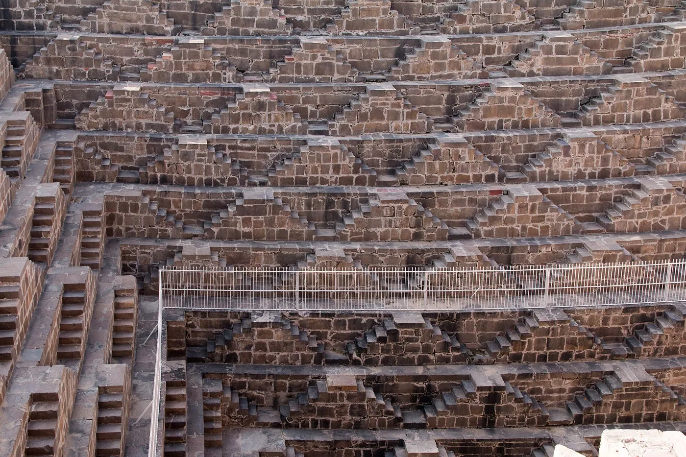
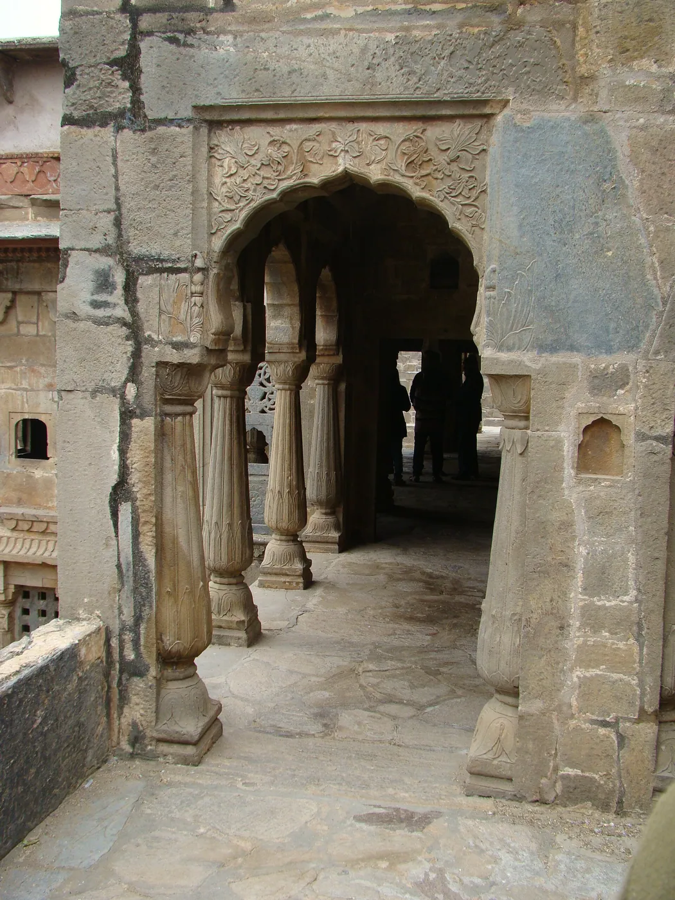
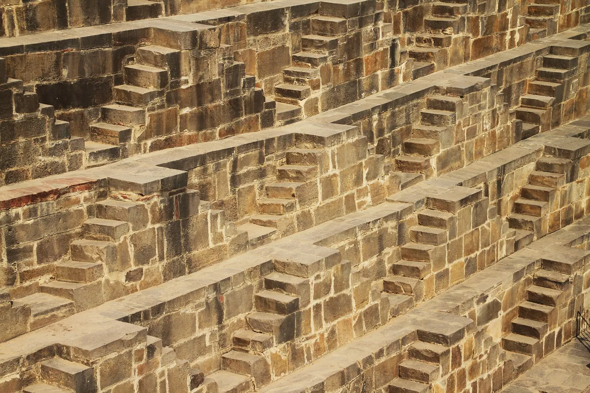
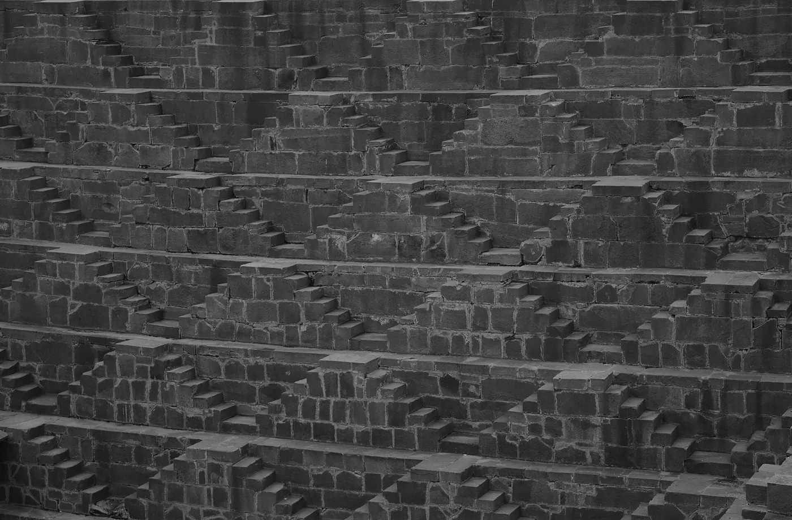

1/8 · Exterior · Chand Baori seen to NorthPhoto: Daniel VILLAFRUELA · CC BY-SA 3.0 · source
2/8 · ExteriorPhoto: Gerd Eichmann · CC BY-SA 4.0 · source
3/8 · ExteriorPhoto: Gerd Eichmann · CC BY 4.0 · source
4/8 · ExteriorPhoto: Gerd Eichmann · CC BY-SA 4.0 · source
5/8 · ExteriorPhoto: Gerd Eichmann · CC BY-SA 4.0 · source
6/8 · InteriorPhoto: Gerd Eichmann · CC BY-SA 4.0 · source
7/8 · DetailPhoto: Gerd Eichmann · CC BY-SA 4.0 · source
8/8 · Detail · This is a photo of ASI monument numberPhoto: SaiGoutham17 · CC BY-SA 4.0 · sourceInfrastructure · Historic precedent
Chand Baori
Unknown builders · Abhaneri, India · c. 800
Key featuresA stepwell thirteen storeys deep: architecture as a climate machine.
- Architect
- Unknown builders
- Place
- Abhaneri, India
- Year
- c. 800
- Typology
- Infrastructure
- Movement
- Historic precedent
- Region
- South Asia
See it on the wall